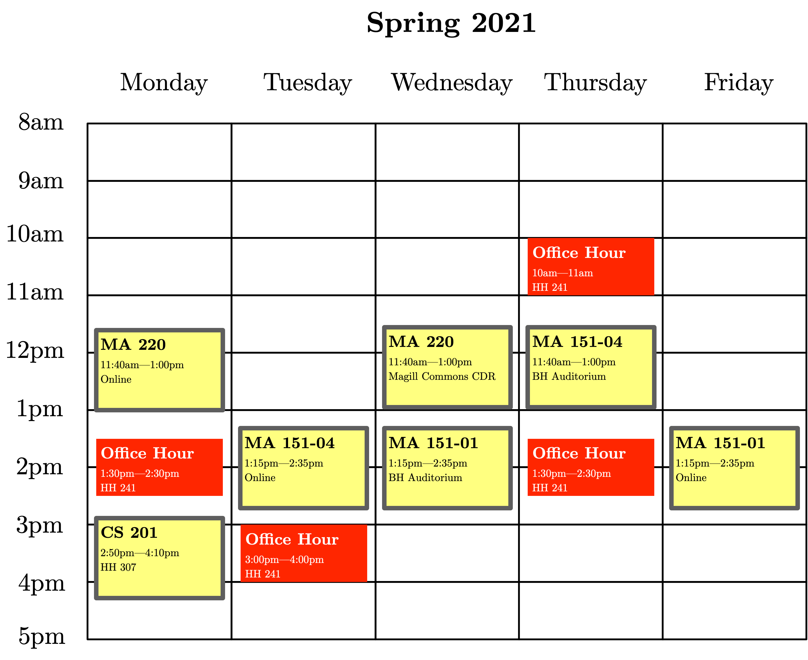

David Darmon
MA 220-01, Probability and Statistics I
Spring 2021
Monday, 11:40 AM – 1:00 PM, Remote via Zoom
Wednesday, 11:40 AM – 1:00 PM, Magill Commons Club Dining Room
This course covers the process of statistical analysis from beginning to end. That process, in broad strokes, is as follows: we pose a scientific question, determine what experiments or observations might provide data towards answering that question, develop approaches to collecting that data, summarize the resulting data, and derive inferences relevant to the original scientific question. In the process, we will learn about sampling, descriptive statistics, probability, probability models, inferential statistics, confidence intervals, hypothesis tests, and regression. A special emphasis will be given to common pitfalls in statistical analysis you are likely to see 'in the wild', including mis-interpretations / mis-understandings of statistical procedures, the conflation of association and causation, and the reproducibility crisis in psychology, medicine, and nutrition.
Prerequisites
MA 116 or MA 118 or MA 126 passed with a grade of C- or higher.
Professor
| Dr. David Darmon | | ddarmon [at] monmouth.edu |
| | Howard Hall 241 |
Topics, Notes, Readings
This is currently a tentative listing of topics, in order.
- Introduction: What is statistics? Where do data come from? Experimental versus observational studies. Types of data.
- Descriptive statistics as summaries of data: Summaries of the entire data distribution: rug plot, dot plot, histogram, box plot. Measures of center: mean, median, mode. Measures of variation: range, standard deviation, mean absolute deviation.
- Probability: The origin of probability in games of chance. The interpretation of probability. Computing probabilities involving two or more events using the addition and multiplication rules. Conditional probability and independence.
- Discrete random variables: Random variables as 'numbers that could have been otherwise.' Probability mass functions. Parametric models for discrete random variables: uniform, Bernoulli, binomial, geometric, and Poisson. Moments of discrete random variables.
- Continuous random variables: Summarizing quantitative data with histograms. From histograms to probability density functions. Parametric models for continuous random variables: uniform, exponential, normal. Moments of continuous random variables. The normal distribution and its properties. Using the normal distribution to approximate the binomial distribution.
- Statistics and their sampling distributions: From forward probability to inverse probability. Statistics as functions of a data set. The sampling distribution of the sample mean. The Law of Large Numbers and the Central Limit Theorem.
- Estimators and point estimation: Making an educated guess at a population parameter using a point estimator. Desirable properties of point estimators. Methods for deriving point estimators: method of moments and maximum likelihood estimation.
- Confidence intervals: Confidence intervals as interval estimators. The interpretation of confidence intervals. Confidence intervals for population means and proportions.
- Hypothesis tests: Hypothesis tests for population means and proportions. Components of a hypothesis test. Types of error in hypothesis testing. Scientific hypotheses and statistical hypotheses. Statistical significance and practical significance. Using confidence intervals for hypothesis tests. Using confidence intervals to distinguish between practical and statistical significance. P-values.
- Everything but the kitchen sink: Two-sample tests for population means and their associated confidence intervals. Two-sample tests for population proportions and their associated confidence intervals.
- Correlation and regression: Exploratory data analysis for two or more quantitative variables. Pearson's correlation coefficient. Confidence interval and hypothesis test for the Pearson correlation between two quantitative variables. Association does not imply causation. Simple linear regression. Interpretation of regression coefficients. Multiple linear regression. Predictive and causative statements.
See the end of this page for the current lecture schedule, subject to revision. Homework and additional resources will be linked there, as available.
Course Mechanics
Office Hours
I will have office hours at the following four times each week:
| Monday, 01:30—2:30 PM | Howard Hall 241 |
| Tuesday, 03:00—04:00 PM | Howard Hall 241 |
| Thursday, 10:00—11:00 AM | Howard Hall 241 |
| Thursday, 01:30—02:30 PM | Howard Hall 241 |
Or graphically:

I will be available for office hours both in-person and on Zoom. For in-person office hours, please email me to make an appointment during one of the times above.
If you are struggling with the homework, having difficulty with the quizzes, or just want to chat, please visit me during my office hours. I am here to help.
Grading Policy
Your final grade will be determined by the following weighting scheme:
- 45% for 2 in-class exams (22.5% each)
- 25% for a cumulative final exam
- 15% for homework problem sets
- 10% for quizzes
- 5% for class participation
I will use the standard 10-point breakdown to assign letter grades to numerical grades:
- \([90, 100] \to \text{A}\)
- \([80, 90) \,\,\, \to \text{B}\)
- \([70, 80) \,\,\, \to \text{C}\)
- \([60, 70) \,\,\, \to \text{D}\)
- \([0, 60) \,\,\,\,\,\, \to \text{F}\)
with pluses and minuses assigned by dividing the intervals into thirds.
Homework
Homework will be assigned at the end of every class meeting, and listed in the Schedule section of this page. Homework assignments are due at the beginning of the next class meeting.
Quizzes
Quizzes will be given during the first 10 minutes of some class sessions. Quizzes may not be every week: I will announce quizzes at least one class session before they will occur. If you miss a quiz your grade will be zero for that quiz. Your lowest two quiz grades of the semester will be dropped.
Class Participation
I expect you to be fully engaged during each class, to ask questions when confused, and to attempt to answer questions when called on. Attempting to answer a question is more important than getting the correct answer.
Attendance
Required. If you expect to miss 2-3 sessions of the course, you should take the course during another semester.
Zoom
We will use Zoom for our remote meetings. During a remote meeting, try to make your surroundings conducive to learning: find a quiet place, close applications and windows on your computer unrelated to class, and clear your work area of other possible distractions. You are expected to have your camera on during the lecture. You are also expected to have the ability to talk during lecture. Under extenuating circumstances where you are unable to talk, you may interact with the class via the Chat feature in Zoom.
In the event that a quiz or test must be taken remotely, I will provide guidelines for how we will hold the quiz or test over Zoom.
Examination Absences
If you miss an examination your grade will be zero for that exam. If you know you will be absent for an exam you must let me know at least one week in advance to schedule a make-up exam.
Textbook
The required textbook is:
- Jay L. Devore and Kenneth N. Berk. Modern mathematical statistics with applications, 1st Edition (Cengage Learning, 2007). Link to University Store
Collaboration, Cheating, and Plagiarism
All submitted work should be your own. You are welcome and encouraged to consult with others while working on an assignment, including other students in the class and tutors in the Mathematics Learning Center. However, whenever you have had assistance with a problem, you must state so at the beginning of the problem solution. Unless this mechanism is abused, there will be no reduction in credit for using and reporting such assistance. This policy applies to both individual and group work. In group work, you only need to acknowledge help from outside the group. This policy does not apply to examinations.
Statement on Special Accommodations
Students with disabilities who need special accommodations for this class are encouraged to meet with me or the appropriate disability service provider on campus as soon as possible. In order to receive accommodations, students must be registered with the appropriate disability service provider on campus as set forth in the student handbook and must follow the University procedure for self-disclosure, which is stated in the University Guide to Services and Accommodations for Students with Disabilities. Students will not be afforded any special accommodations for academic work completed prior to the disclosure of the disability, nor will they be afforded any special accommodations prior to the completion of the documentation process with the appropriate disability office.
School of Science Commitment to Equity and Inclusion
The School of Science does not discriminate based on race, gender, ethnicity, sexual orientation, or religion. We strive to create a learning environment that allows everyone to succeed and grow. Towards that end, we are here to assist you in any way we can. Should you experience any difficulties or challenges due to discriminatory or harassing behaviors of any sort in your classes, please know that many people are available to help. You can contact your professor, your academic advisor, the department chair, or any of the Deans (Dean Bachrach, Associate Dean Duckett and Assistant Dean Tiedemann) by email or phone or to meet in person by appointment. There are also resources available in the larger University community including the Office of Equity and Diversity and the Intercultural Center.
COVID-19 and In-person Meetings
During the COVID-19 pandemic, it is critically important that we care for ourselves and each other by taking strict measures to avoid spreading SARS-CoV-2. It is therefore a requirement that face masks are worn properly and appropriate physical distancing is maintained at all times during all classes.
When entering a room, please pick up disinfectant wipes and move as far into the classroom as possible in order to help maintain physical distances. Similarly, leave the room in an orderly fashion and dispose of the wipes on the way out.
Students should wipe down their desktops upon arrival.
Students are expected to wipe down keyboards and monitors with disinfectant wipes (provided) both before and after use.
For further information about COVID-19-related policies, please refer to the Student Handbook.
FERPA Video Prohibition
Under the Family Educational Rights and Privacy Act (FERPA), your education records as a student are confidential and protected. Under most circumstances your records will not be released without your written and signed consent. Part of a student's protected and confidential education records include video and / or audio recordings of students within the classroom. As such, students are strictly prohibited from video or audio recording distance learning lectures off of any platform utilized by professors (Zoom, Webex, etc.). A prohibited recording includes, but is not limited to recordings using the platform, a cell phone, tablet, video camera, audio capture device, etc. Students may be subject to disciplinary action under the Student Code of Conduct if found to have made any video and/or audio recording distance learning lectures without proper consent.
R
We will use R, a programming language for statistical computing, throughout the semester for in-class activities and homework assignments. I will cover the relevant features of R throughout the course.
You should install R on your personal computer. You can install R by following the instructions for Windows here, for macOS here, or for Linux here. You will also want to install RStudio, and Integrated Development Environment for R, which you can find here.
We will use R as a scripting language and statistical calculator, and thus will not get into the nitty-gritty of programming in R. We will largely use functionality built into the mosaic library in R. You can find a comprehensive tutorial to using R and mosaic here.
Schedule
Subject to revision. Assignments and solutions will all be linked here, as they are available. All readings are from the textbook by Devore and Berk unless otherwise noted.
- Prior to January 25, Lecture 0:
- Topics: Pre-class assessment.
- Pre-class Assignments
- January 25, Lecture 1:
- Topics: Introduction to class. What is statistics? Where do data come from? Types of data. Sampling techniques. Collecting data. Bias in data collection.
- Sections: 1.1, Excerpt from Triola & Triola
- Learning Objectives
- Homework 1
- January 27, Lecture 2:
- Topics: Collecting data. Experimental versus observational studies. Confounding in observational studies. Summarizing data. Rug plots, histograms, box plots.
- Sections: 1.1, 1.2
- Learning Objectives
- Homework 2
- February 1, Lecture 3:
- Topics: Summaries of center: mean, median, mode. Introduction to R. Summaries of spread: standard deviation, range, mean absolute error.
- Sections: 1.3, 1.4
- Learning Objectives
- Lab 1
- Homework 3
- February 3, Lecture 4:
- Topics: Random chance and probability. Probabilities and their interpretation. The addition rule for probabilities. Using Venn diagrams to reason about probabilities.
- Sections: 2.1, 2.2
- Learning Objectives
- Homework 4
- February 8, Lecture 5:
- Topics: Conditional probability. The multiplication rule for probabilities.
- Sections: 2.4
- Learning Objectives
- Homework 5
- February 10, Lecture 6:
- Topics: Law of Total Probability. Bayes' Rule. Independence of events.
- Sections: 2.3, 2.5
- Learning Objectives
- Homework 6
- February 15, Lecture 7:
- Topics: Random variables: numbers that could have been otherwise. Discrete random variables. The probability mass function \(p\). The cumulative distribution function \(F\).
- Sections: 3.1, 3.2
- Learning Objectives
- Homework 7
- February 17, Lecture 8:
- Topics: More on discrete random variables. Some important discrete random variables: discrete uniform, Bernoulli, and geometric. Simulating random variables using R. Expectation of a discrete random variable.
- Sections: 3.2, 3.3
- Learning Objectives
- Homework 8
- February 22, Lecture 9:
- Topics: More on discrete random variables. Interpreting the expected value of a random variable. Expectation as a linear operator: \(E(a X + b) = a E(X) + b\). Expectation of functions of a discrete random variable. Variance of a discrete random variable. Binomial experiments.
- Sections: 3.3, 3.5
- Learning Objectives
- Homework 9
- February 24, Lecture 10:
- Topics: Exam 1.
- Sections: Chapters 1 - 3
- Exam 1 Study Guide
- March 1, Lecture 11:
- Topics: Binomial experiments. Binomial random variables. Computing binomial probabilities with R. Mean and variance of a binomial random variable.
- Sections: 3.5
- Learning Objectives
- Homework 10
- March 3, Lecture 12:
- Topics: Continuous random variables. The probability density function \(f\). The cumulative distribution function \(F\). Expectation and variance for continuous random variables.
- Sections: 4.1, 4.2
- Learning Objectives
- Homework 11
- Demo of Density Functions as Limits of Density Histograms
- Demo of the Relationship Between the PDF and CDF of a Random Variable
- March 10, Lecture 13:
- Topics: Standard Gaussian (normal) random variables. Non-standard Gaussian (normal) random variables. Why oh why couldn't the Gaussian cumulative distribution function be elementary? Computing Gaussian probabilities with R. Percentiles of Gaussian random variables.
- Sections: 4.3
- Learning Objectives
- Homework 12
- Demo for Computing Normal Probability Queries Using R
- Practice with Computing Normal Probability Queries Using R
- March 15, Lecture 14:
- Topics: Statistics and their sampling distributions. The sample mean. The central limit theorem.
- Sections: 6.1, 6.2
- Learning Objectives
- Homework 13
- Demo of the Sampling Distribution of a Statistic via Enumeration
- Demo of the Sampling Distribution of a Statistic via Simulation
- Age at Time of Death By Current Age and Other Demographics by Kevin Stadler
- March 17, Lecture 15:
- Topics: Point estimators. Example point estimators. Desirable properties of point estimators. The standard error of a point estimator.
- Sections: 7.1
- Learning Objectives
- Homework 14
- Demo Motivating Inferential Statistics
- March 22, Lecture 16:
- Topics: Margin of error for the sample mean. Interval estimators. Confidence intervals. Confidence interval for a population mean: population standard deviation known and unknown.
- Sections: 8.1, 8.3
- Learning Objectives
- Homework 15
- Demo of the Probability Density Function for a \(t\)-distributed Random Variable
- March 24, Lecture 17:
- Topics: Two-sided and one-sided confidence intervals for a population mean. Interpreting confidence intervals. Confidence interval for a population proportion.
- Sections: 8.1, 8.2
- March 29, Lecture 18:
- Topics: Hypothesis tests. Stating a claim about a population. Jargon of hypothesis testing: null and alternative hypotheses. Determining the null and alternive hypotheses based on a stated claim. Performing a hypothesis test using a confidence interval. Two-sided hypothesis tests for population means and proportions. One-sided hypothesis tests using one-sided confidence intervals.
- Sections: 9.1, 9.2, 9.3
- March 31, Lecture 19:
- Topics: Exam 2.
- Sections: Chapters 3, 4, 6, 7, 8
- Exam 2 Study Guide
- April 5, Lecture 20:
- Topics: Hypothesis tests. Types of errors in hypothesis testing. The logic of hypothesis tests. Test statistics for hypothesis tests. Using test statistics to test one-sided and two-sided alternative hypotheses.
- Sections: 9.1, 9.2, 9.3
- April 7, Lecture 21:
- Topics: Power of a hypothesis test. \(P\)-values. More practice with hypothesis tests.
- Sections: 9.1, 9.2, 9.4
- April 12, Lecture 22:
- Topics: Inferences about two populations. Inferences with independent samples. Inferences involving two population means.
- Sections: 10.1, 10.2
- April 14, Lecture 23:
- Topics: Problem Solving Session
- Sections: Chapters 7-10
- April 19, Lecture 24:
- Topics: Association between two quantitative variables. Scatterplots. Correlation vs. causation. Population and sample Pearson correlations. Confidence intervals and hypothesis tests for a population correlation.
- Sections: 12.5
- April 21, Lecture 25:
- Topics: Simple linear regression. Trendlines and interpreting the slope and intercept. Evaluating a regression model: standard error of prediction and median absolute error of prediction.
- Sections: 12.1, 12.2
- April 26, Lecture 26:
- Topics: Simple linear regression. Whence and wherefore the 'line of best fit'?. Confidence intervals for regression parameters. Multiple linear regression.
- Sections: 12.1, 12.2, 12.3, 12.6
- May 3, Final Exam:
- Time: 11:35 AM - 2:25 PM
- Location: Magill Commons Club Dining Room